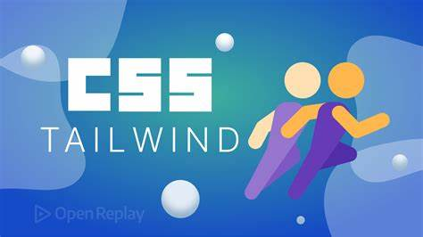
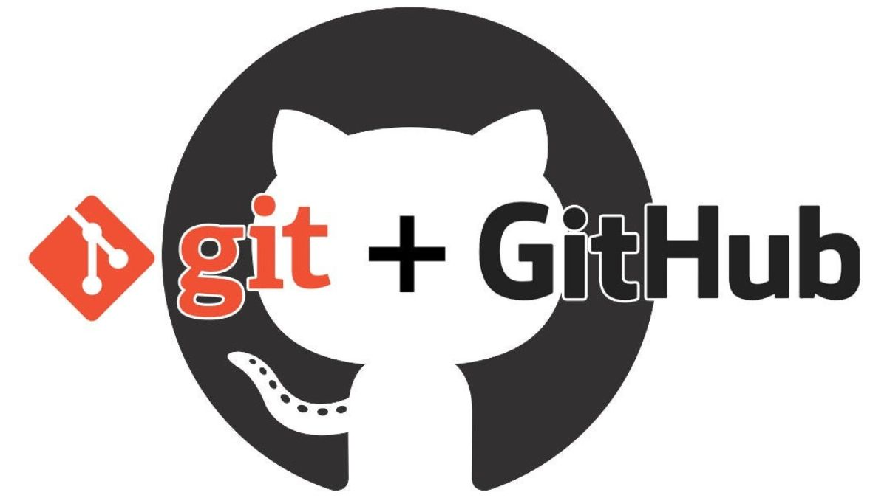
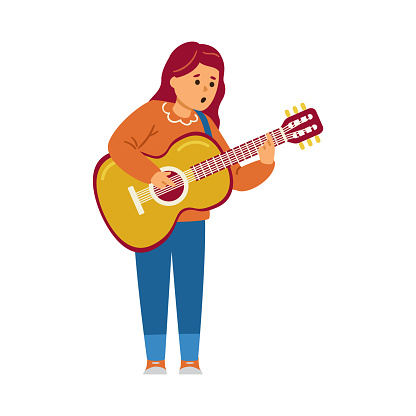

Keahlian Saya

HTML & CSS
Mampu membuat struktur dan tampilan dasar halaman web yang rapi dan responsif.

Tailwind CSS
Terbiasa menggunakan framework ini untuk mempercepat proses styling dengan hasil konsisten.

Git & GitHub
Menggunakan Git untuk version control dan GitHub untuk kolaborasi serta hosting proyek.

Desain Responsif
Memastikan website tetap nyaman digunakan di berbagai perangkat dan ukuran layar.
Bernyanyi
Memiliki kemampuan bernyanyi dengan berbagai genre, baik solo maupun dalam grup.

Bermain Gitar
Mampu bermain gitar dengan teknik dasar hingga menengah, serta mengiringi lagu.